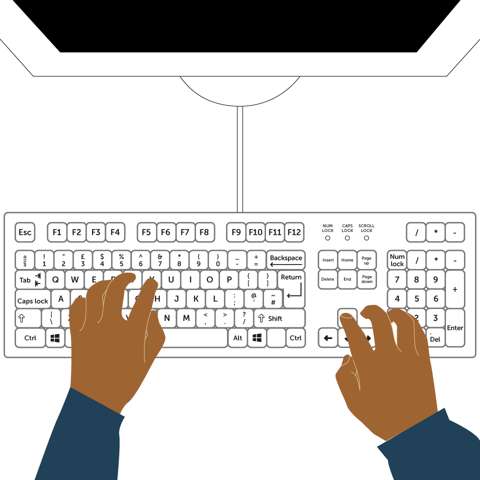
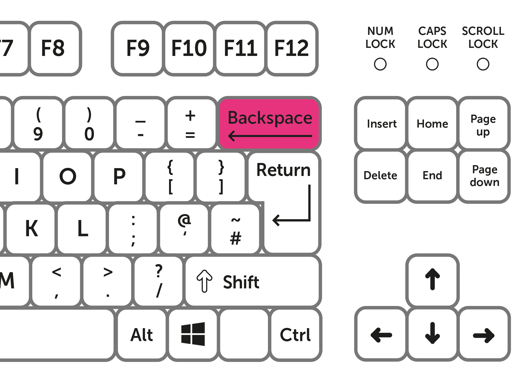

-
The keyboard
The keyboard lets you type information, for example when you're writing an email or filling in a form online. Most keyboards are based on a layout known as QWERTY. These are the first six letters you see on a standard keyboard.

-
Entering text
There are many different ways of typing on a keyboard. Some people use both hands, but others use only two fingers. You will develop your own way of entering text using the keyboard. The main thing to remember is that accuracy is more important than speed.

-
The backspace key
Now that you’ve tried typing letters, you’ll need to know how to delete them if you make a mistake. The Backspace key is used to move the cursor back a space, and to delete characters to the left of the flashing cursor.
